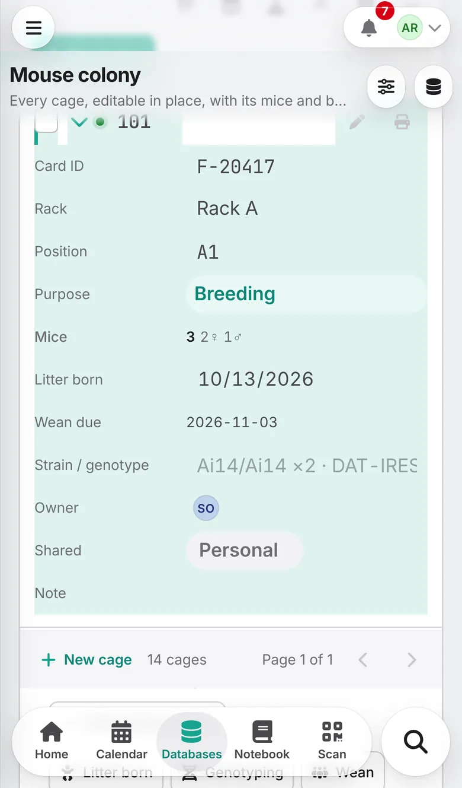
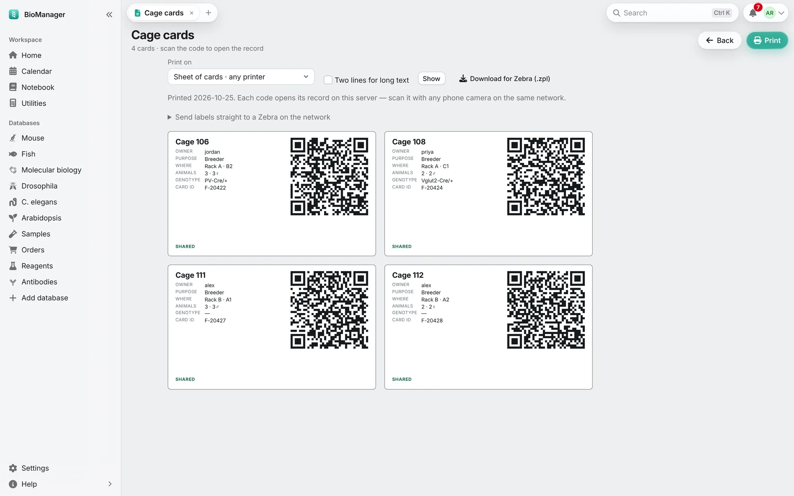

Working as a lab
Phones and cage cards
Use BioManager on a phone, and print cage cards and labels that open records when scanned.
- Android
- Install
BioManager-Android.apkfrom the download page (allow your browser to install apps when asked), type your lab server's address once, and you're in. The Scan button reads cage cards. Signed in, the app is one of your devices and keeps the facility on the phone for when there is no signal (Working offline). - iPhone and iPad
- Open the server in Safari and tap Share → Add to Home Screen. BioManager gets its own icon and opens full screen like an app; your camera scans cage cards. (Android without the app: Chrome → ⋮ → Install app.)
- Getting around
- A bar at the bottom holds Home, Calendar, Databases (a list of the lab's databases), Notebook and Scan, with Search in the round button beside it; it shrinks while you read down a page. Scan uses the app's scanner, or the phone's camera; in Safari on an iPhone it reminds you to point the Camera app at the card, which opens it here. ☰ at the top left brings in the whole sidebar.
- Working offline
- Animal facilities often have no signal. The Android app and the desktop app keep a
copy of what you need there: the colony's racks, cages, mice, litters and recent weights, your to-dos for the next two
weeks, fly and worm vials and fish tanks, as you may see them. They refresh it when they open, when the network comes
back and every 15 minutes. Before going down, press and hold the Scan button and choose Get ready for the
facility for a fresh copy.
When the lab's server can't be reached, the app shows its offline screens instead of an error, marked Offline with when the copy was made (amber once it is more than a day old). Find a cage by its ID, card or a mouse's number, or scan its card, and record what you do: Record a weight, Died, Move, a Note; on a Breeding cage Litter born, Genotyping (the pups appear at once, ready to weigh) and Wean; tick a to-do; Flipped or Discard a vial; a note on a tank. Each shows at once, marked waiting, and the bar counts the changes waiting. Nothing is lost if the app closes.
A Breeding cage lists each litter not yet weaned. With one there, Litter born asks whether this is Another litter or corrects its date; with two, Genotyping and Wean ask Which litter, the oldest first, as the pages do (Record a litter).
Back in signal, the changes go to the lab in the order you made them, each through the same rules as the pages, as you, with the time you did it. If someone changed the same thing meanwhile (marked the mouse Breeder while you marked it dead, recorded another birth date), yours waits under Needs your decision in your account menu, and on Home after three days: it shows what you saw, what is there now and who changed it, with Keep mine, Keep theirs or Edit. A different field changed meanwhile is simply kept along with yours. Something the lab refuses (a cage that isn't a Breeding cage any more) is listed on the same page with the reason.
- Cage cards
- Cages → Cage cards prints cards sized for standard card stock — owner, purpose, where it goes (rack and position), animals with how many of each sex, genotype and a QR code. Scanning it opens that cage, ready to edit, at the rack. Tank labels (Zebrafish), Labels on a fly or worm database, and Labels on ticked samples, reagents or any inventory's rows do the same for tanks, vials and tubes.
- Label printers
- Print on chooses a sheet of cards for any printer, or a label printer's roll: Brother QL (62 × 29, 90 × 29, 100 × 62 mm), Zebra (2 × 1, 3 × 1, 4 × 2, 4 × 2.5 in) or cryo-tube labels. It then prints one label a page, typed to fit; in the print dialog pick the label printer and that label size, margins None. Your choice is remembered. For tubes, On each label chooses what a label says (box, position, lot, owner, a column such as concentration, the day printed), remembered for each database, and Two lines for long text wraps a long name or place instead of cutting it. For a Zebra, Download for Zebra (.zpl) gives the labels in its own language; or an admin adds the Zebra's address on the lab's network once (under Send labels straight to a Zebra), and Send to Zebra prints them at once.


Troubleshooting
My phone can't reach the server
Check the address with your admin; that you're on the lab's network, VPN or Tailscale; and, if your lab uses its own certificate, that it's installed on the phone.
The offline screens say "This device has no copy of the lab yet"
The app keeps a copy once you have signed in through it with a signal. Open BioManager once where it reaches the server, signed in, then Get ready for the facility.